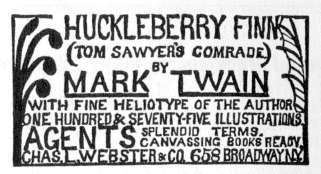
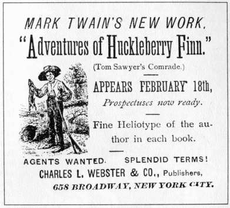
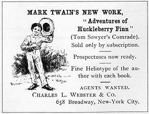

Promoting Huckleberry FinnSome critics, like the one who wrote the sentence above in a review for the Bulletin, assumed MT himself deliberately arranged to have an illustration in the novel's sales prospectus obscenely altered, as a way to secure "many thousand dollars' worth of free advertising" (see Sales Prospectus). There is, however, no evidence of that, and MT estimated that this prank cost him $10,000. However, as both the author and the owner of the publishing company he created to bring out his new novel, MT did organize an elaborate publicity campaign to promote Huck Finn. In the summer of 1884 he decided to arrange a lecture tour to coincide with the book's appearance, although it wasn't until the tour had begun that he decided to make readings from the novel a main feature of the performance (see Twins of Genius Tour). Originally MT's goal was to sell 40,000 subscriptions by December 15, publish that day, and then "dump" thousands of additional copies into bookstores in time to "catch the holiday trade." That plan was defeated by the unknown prankster who defaced one of the book's illustrations, delaying publication until 1885. News reports of the event, however, did help publicize the forthcoming book (see Sales Prospectus).  In a departure from his policy against pre-publishing his work in periodicals, MT agreed to let The Century Magazine publish excerpts from Huck in three consecutive issues between December, 1884, and February, 1885. He even helped "carefully edit" the extracts "for a magazine audience." In March, the Concord Library Committee determined that Huck Finn was "the veriest trash," and banned the book from its shelves. MT called the action a "tip-top puff," and predicted that it "will sell 25,000 copies for us sure." There's no way to tell if he was right, but the Library's action was widely reported and debated in papers around the country, which helped keep the book in the public's eye. By selling 57,000 copies by May 6, 1885, Huck Finn got off to an even better start than Innocents Abroad.  Another of MT's early plans was to publish Huck Finn in tandem with a matching edition of Tom Sawyer. The text of Huck Finn was even slightly abridged to make it a more suitable companion volume to the relatively short Tom Sawyer. This idea was abandoned when Elisha Bliss refused to sell Webster & Co. the rights to Tom Sawyer, but in the early 1890s Webster & Co. did publish Huck together with The Prince and the Pauper and Connecticut Yankee as a boxed set. Huck Finn was also reprinted, with fewer of Kemble's illustrations, in a "Cheap Edition." |